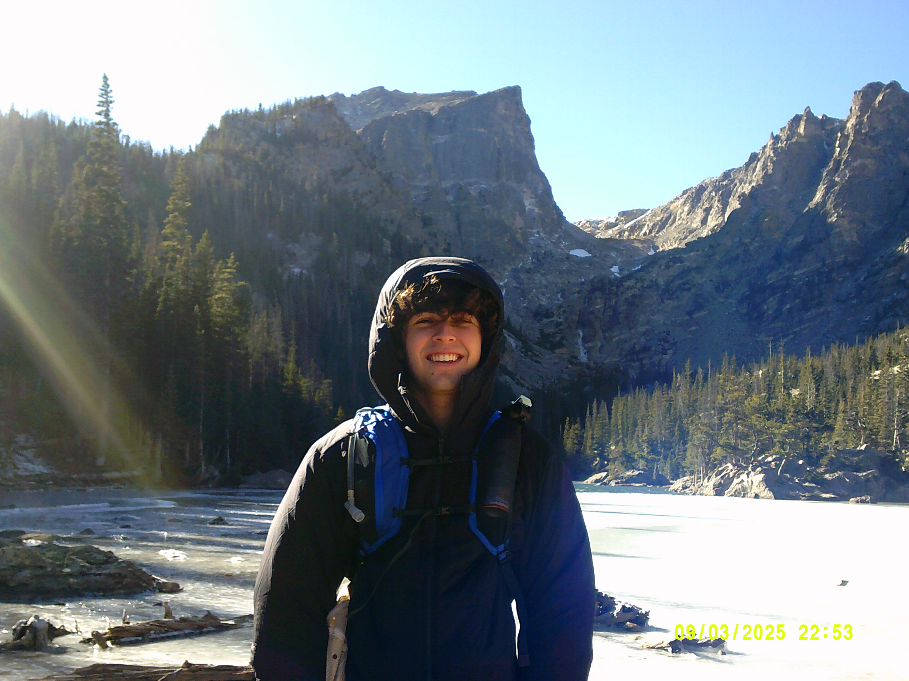
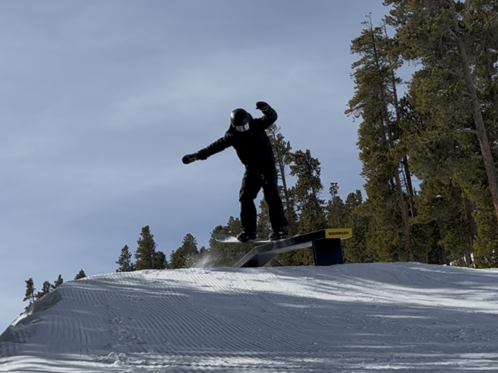
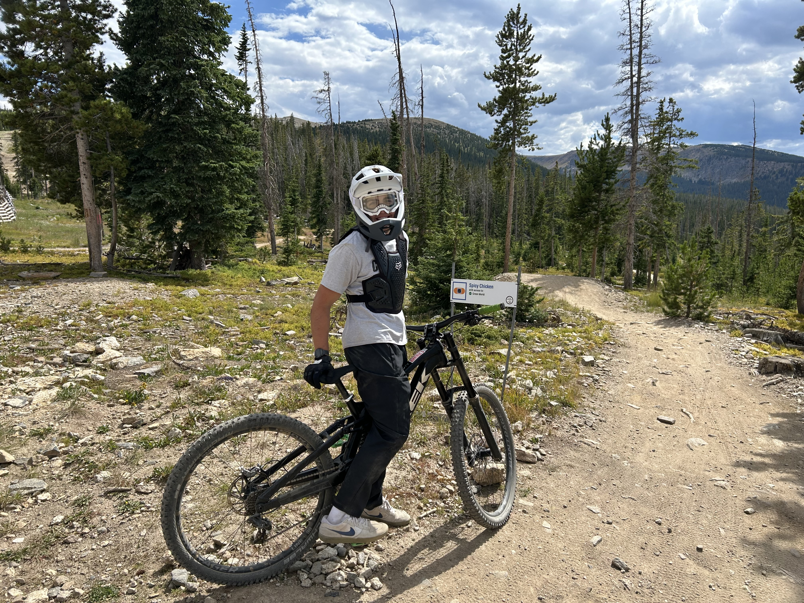

I'm Luca, a Creative Technology and Design major at the University of Colorado Boulder.
I have a passion for all things technology, from 3D modeling to coding and UX design.
I plan to graduate in May 2028 and hope to find a career path that allows me to
continue pursuing my interests in technology and design.





Outside of school, I have all sorts of interests and hobbies.
I love snowboarding and mountain biking. I am a member of the CU snowboarding team and
the CU endurance racing team. I also enjoy hiking and traveling. I am currently
challenging myself to climb as many 14ers as I can, and I hope to hike all over the
world one day.